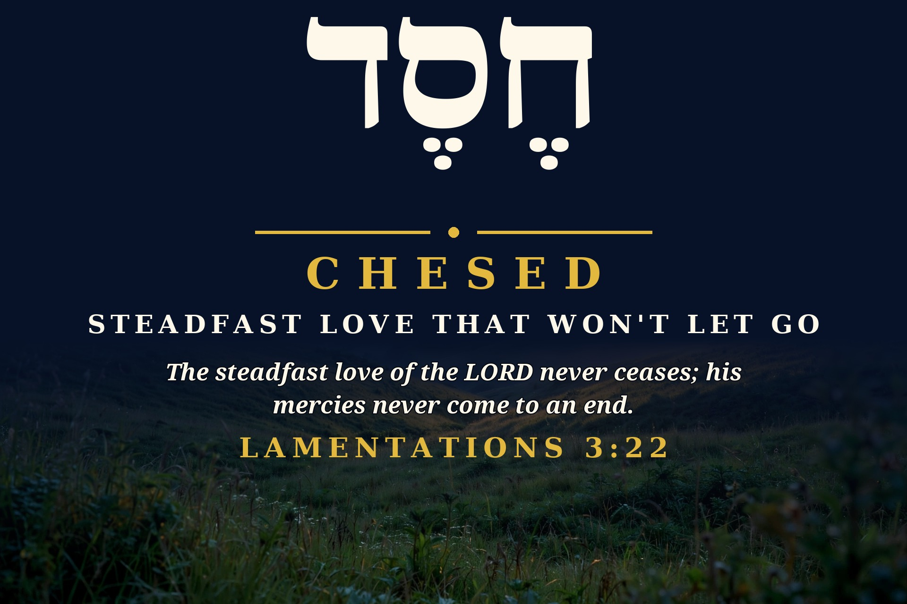
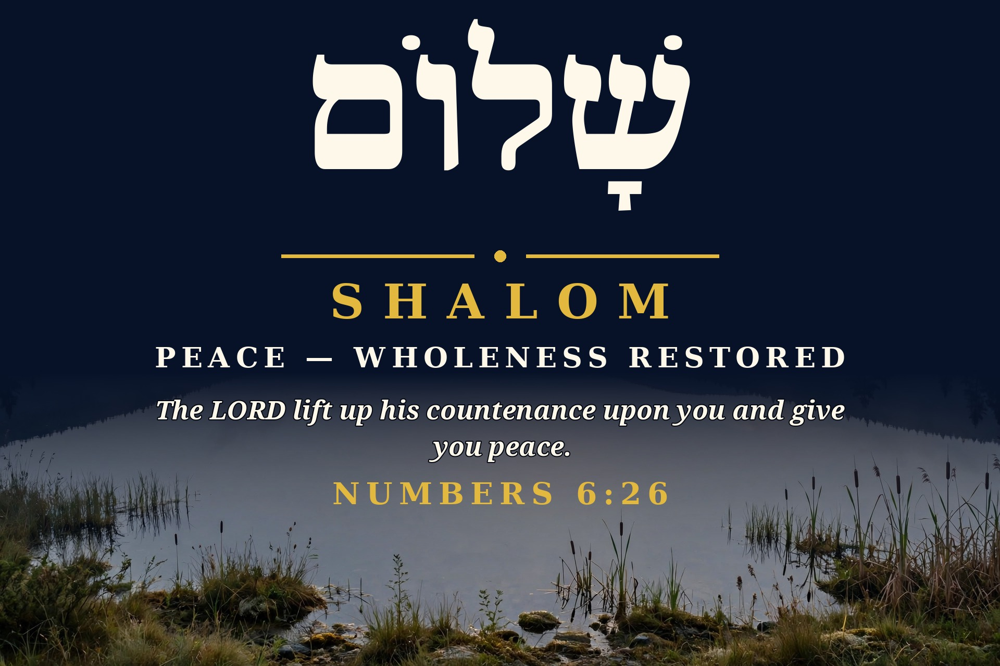
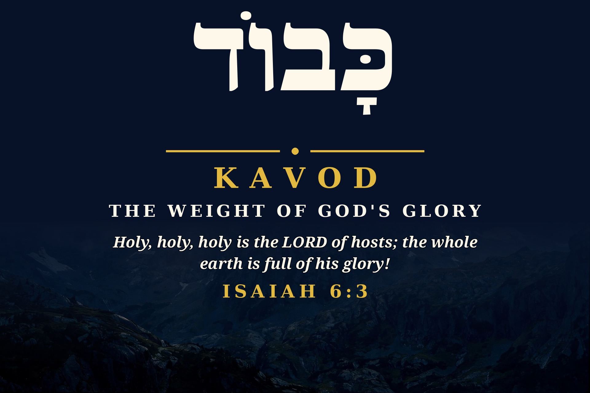
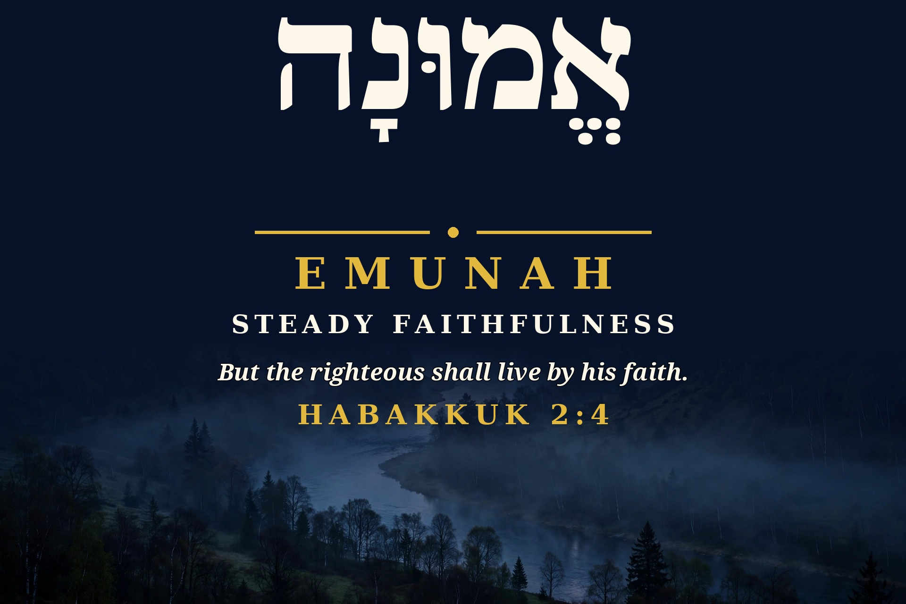
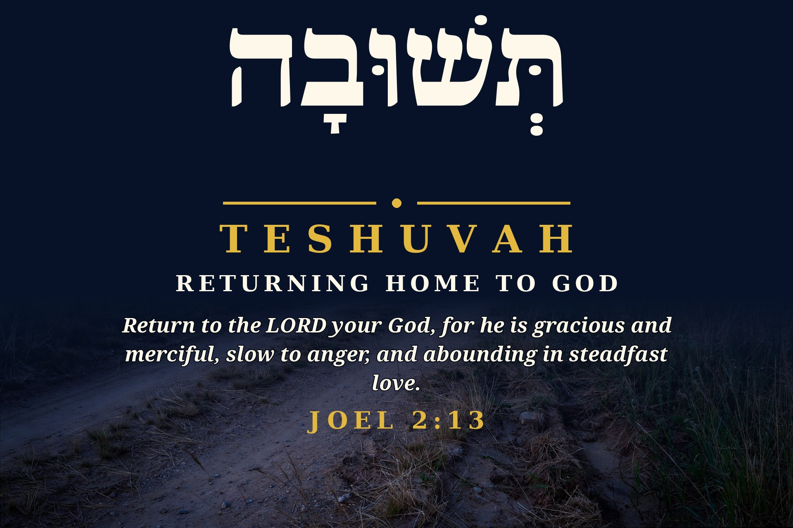
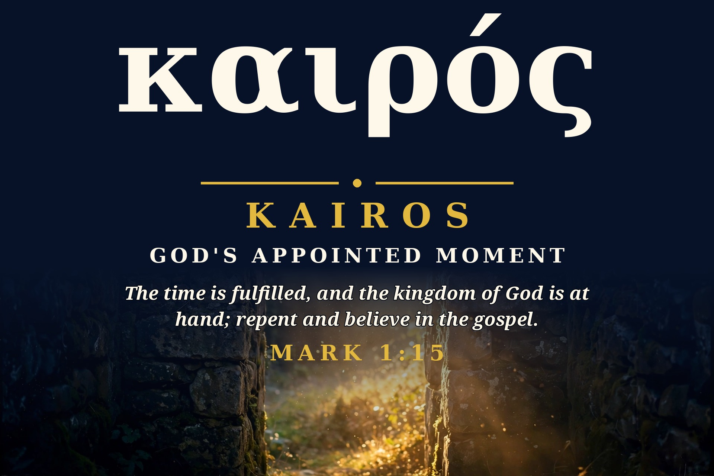
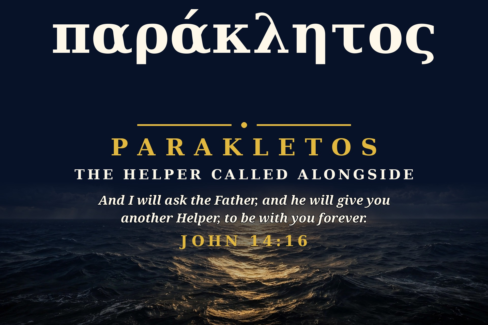

Word Cards — Week One: Seven Words That Carry Weight
Some words in Scripture are too full for one English word to carry. That is why we spent a week with seven of them — one a day, in the language they were written in, with the verse that shows what the word actually does. Ruach opened the set on October 28. These seven followed, October 29 through November 4.
A word of care first: a Bible word gets its meaning from how it is used, in its own verse — not from a slogan. So each word below is read in its context, exactly as it appeared on its card.
1. Chesed — חֶסֶד

Chesed (Hebrew, ḥesed) — Jeremiah says this in the middle of a ruined city, in the book called Lamentations: God's steadfast love has not stopped, even there. In use, chesed is covenant love in action — God's loyal, merciful commitment to His people that does not depend on their faithfulness and does not run out when everything else has. It is not just a feeling God has; it is love that keeps its promise.
The steadfast love of the LORD never ceases; his mercies never come to an end.
Lamentations 3:22 (ESV)
2. Shalom — שָׁלוֹם

Shalom (Hebrew, shālôm) — This is the last line of the priestly blessing in Numbers 6, spoken over God's people. Shalom is more than quiet, and more than the absence of a fight: it is wholeness and well-being restored, and in this verse it is not something Israel manufactures — it is given, when the LORD lifts up His face toward His people. Peace, here, is a gift that comes from being looked on with favor by God.
The LORD lift up his countenance upon you and give you peace.
Numbers 6:26 (ESV)
3. Kavod — כָּבוֹד

Kavod (Hebrew, kābôd) — In Isaiah's temple vision, the seraphim do not say the earth holds a little of God's glory; they say the whole earth is full of it. Kavod carries the sense of weight — God's glory is not a vague glow or a mood, but His manifest worth and splendor, heavy enough to shake thresholds and fill a temple with smoke (Isaiah 6:1–4). It is glory that calls for reverence, not casual handling.
Holy, holy, holy is the LORD of hosts; the whole earth is full of his glory!
Isaiah 6:3 (ESV)
4. Emunah — אֱמוּנָה

Emunah (Hebrew, ʾĕmûnâ) — Habakkuk is told to wait for a vision while trouble is coming, and this is the line he is given to live on. Emunah is steadiness — firm faithfulness, and the trusting response it calls for: the righteous person lives, day after day, by holding fast to God when sight gives him no evidence yet. It is not a flash of feeling; it is faith that stays standing.
But the righteous shall live by his faith.
Habakkuk 2:4 (ESV)
5. Teshuvah — תְּשׁוּבָה

Teshuvah (Hebrew, tĕshûbâ, from the verb “to return, to turn back”) — Joel's call is not “feel worse”; it is “return to the LORD your God” — with the heart, not just the garments (Joel 2:12–13). Teshuvah is the actual turning around and coming back, and Joel grounds the courage to do it in who God is: gracious, merciful, slow to anger, abounding in steadfast love. Repentance, in this verse, is a homecoming.
Return to the LORD your God, for he is gracious and merciful, slow to anger, and abounding in steadfast love.
Joel 2:13 (ESV)
6. Kairos — καιρός

Kairos (Greek, kairos) — These are the first preached words of Jesus in Mark's Gospel: “The time is fulfilled.” In this use, kairos is not time simply passing, one day after another; it is the appointed, decisive time arriving — God's promised moment has come, the kingdom of God is at hand, and the right response is not to watch it pass but to repent and believe in the gospel. Some moments are not ordinary, and this one changed everything.
The time is fulfilled, and the kingdom of God is at hand; repent and believe in the gospel.
Mark 1:15 (ESV)
7. Parakletos — παράκλητος

Parakletos (Greek, paraklētos) — On the night before the cross, Jesus promises His disciples “another Helper” — the Holy Spirit — “to be with you forever.” John shows the word's meaning by what the Spirit does in this same teaching: He dwells with and in them, teaches them, and brings Jesus' words to remembrance (John 14:17, 26). He is not an impersonal force, and He is not a temporary visitor; He is the personal Helper called alongside, who remains.
And I will ask the Father, and he will give you another Helper, to be with you forever.
John 14:16 (ESV)
Which word is yours this week?
Which of these words do you need this week? Steadfast love that won't let go, wholeness restored, the weight of His glory, steady faithfulness, the road home, God's appointed moment, or the Helper who stays? Carry one of them with you — and read it in its verse, where it does its work.
And for one more word from God's calendar every morning, watch for the daily This Season in Scripture email — a short walk through what God was doing in this season, in Bible times.
Meeting others where they are in the Name of Jesus
Christ Proclaimed. Jesus is Lord.